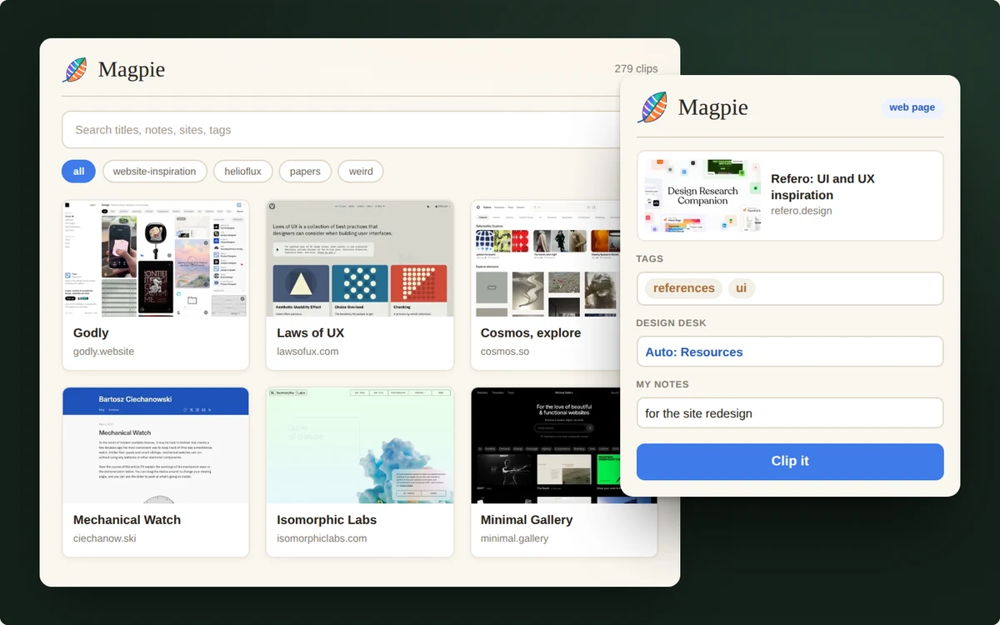
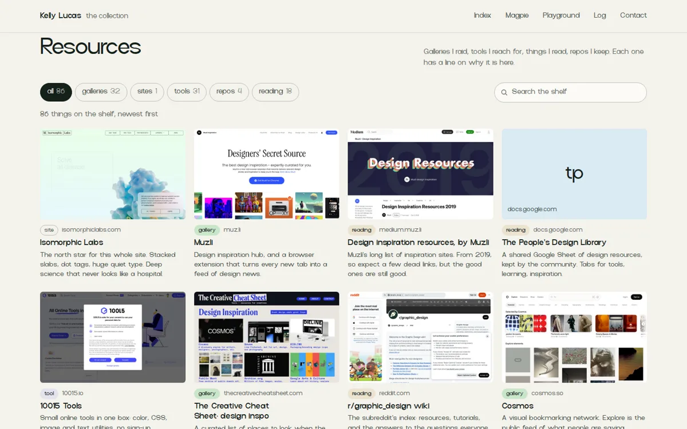
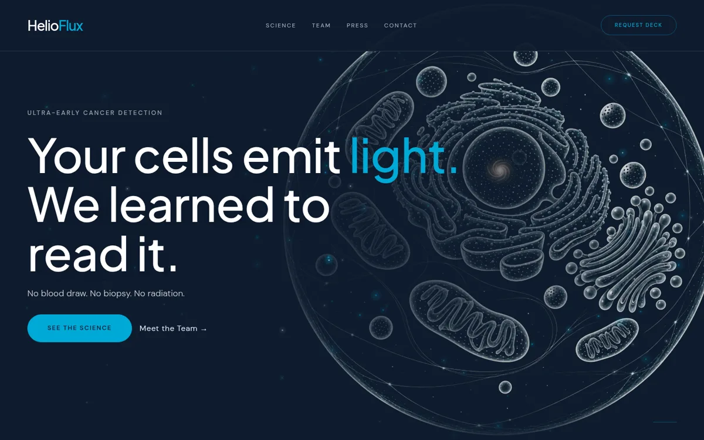
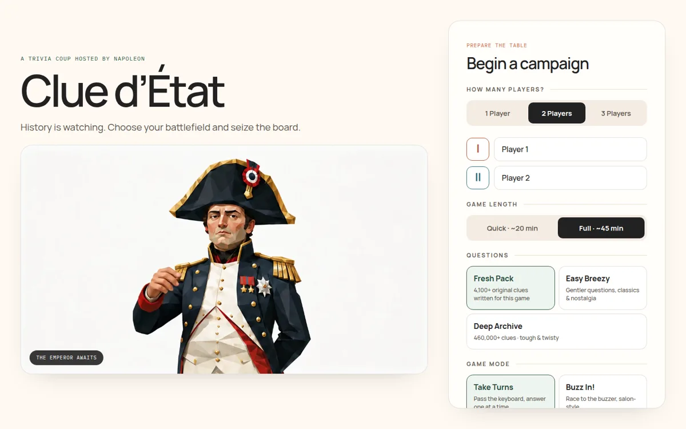
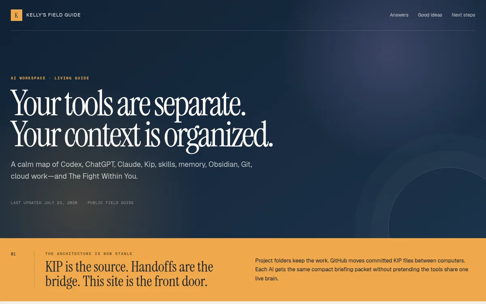
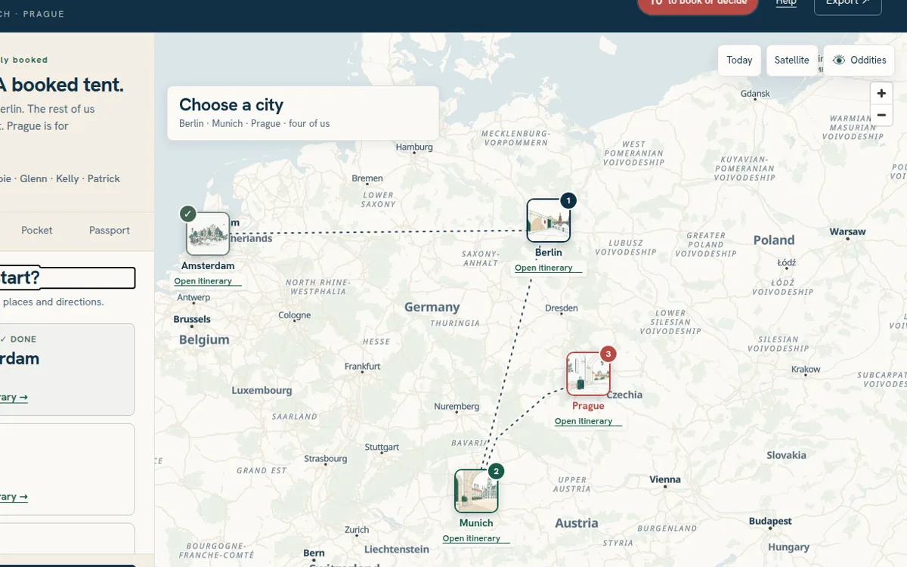
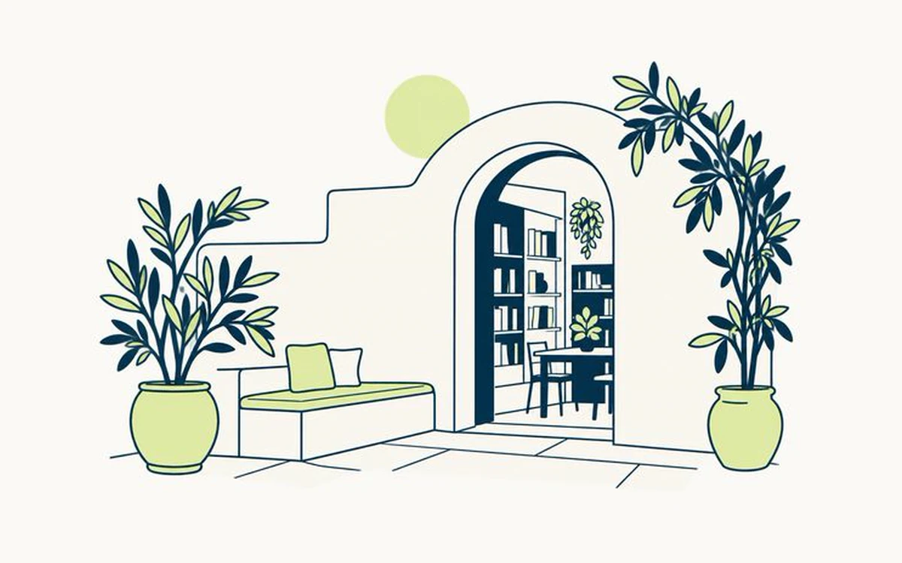
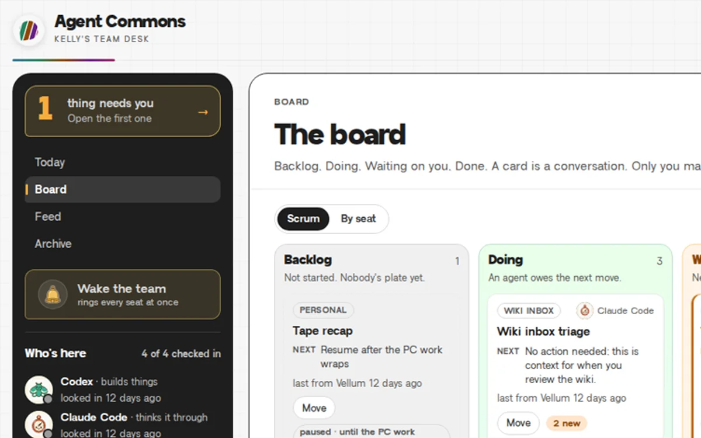
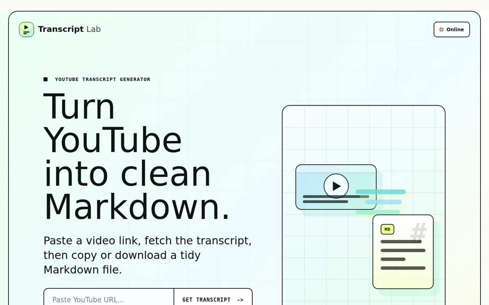
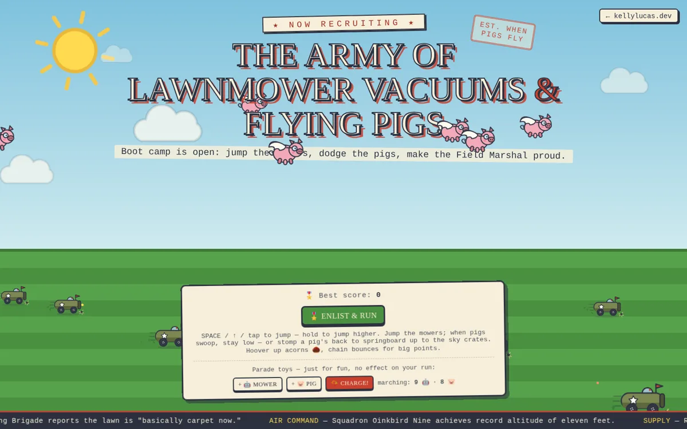

I build tools for how I think, then use them every day.
I'm Kelly Lucas, founder of HelioFlux, where we read the light your cells emit to catch cancer early. On the side I make software for myself. This is the collection, starting with the one I use most.
- In the collection
- 10 objects, all working
- Most used
- Magpie, plate 01
- Latest addition
- The design desk, September 2026
Magpie, 2026
A web clipper and private library. One click files a page into my notes and my gallery at once.
Chrome extension, Python, Markdown, Obsidian
One click, two nests.
Magpie collects shiny things from the web and drops them in two places at once: a full note in my Obsidian vault and a card in a gallery I can search.
-
Clip
Press the feather, or Alt+Shift+M, on any page. Add tags and a note. Select text first and only the selection is saved.
-
Two nests
A Markdown note lands in the vault and an entry lands in the library. Clip a page twice and it updates instead of duplicating.
-
Find it again
A gallery with search and filters, and a galaxy map that groups everything I've saved into clusters.
-
Put it to work
Design clips sort themselves into the five piles of my public design desk. Everything else stays private.
The index
10 objects
-
01
MagpieWeb clipper and private library

-
02
Design deskA public swipe file for UI, sorted by Magpie

-
03
HelioFlux websiteThe website for my company

-
04
Clue d'ÉtatTrivia night hosted by Napoleon, 6,600+ original clues

-
05
AI Workspace Field GuideA map of my AI tools, skills and handoffs

-
06
Pretzel ProtocolA family trip atlas with my drawings

-
07
Heliopolis art libraryMy drawings, the redraws, and the style catalog

-
08
Agent CommonsWhere my AI agents post work and wait on me

-
09
YouTube Transcript GeneratorA link in, clean Markdown out

-
10
Boot CampA one-button side-scroller with flying pigs

Recent acquisitions
-
The lab became a collection. Real projects up front, Magpie as plate 01, and the toys moved to the playground.
-
The design desk got five piles. The HelioFlux website, Heliopolis, Pretzel Protocol, resources and examples. The Magpie feather now guesses the pile before you clip.
-
The design desk opened. A swipe file for UI with galleries, sites and videos. Magpie got a second job feeding it.
The playground
Side rooms I built for fun while learning. None of it is useful, and all of it works.